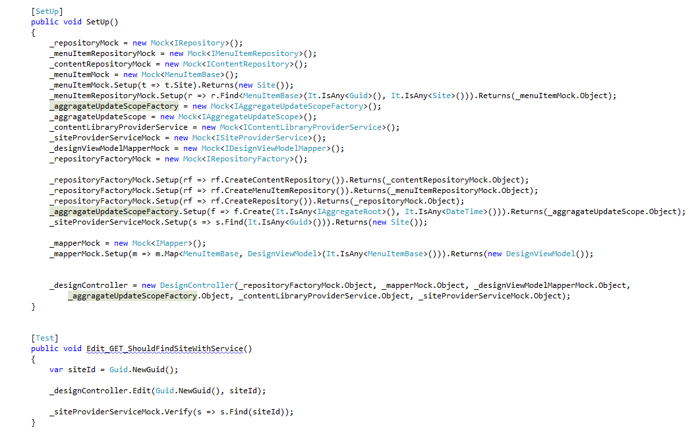
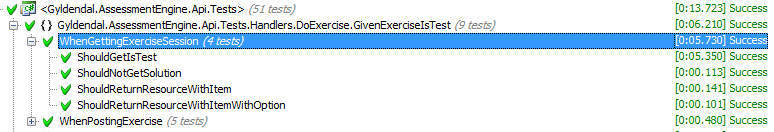
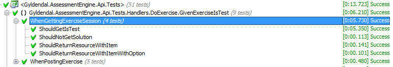

Gaute Magnussen
02. 02. 2012
Bakgrunn
Har skrevet mange tester. Mange dårlige. Mange gode.
Sett tester bli like mye til hinder som til hjelp.

behaviour driven development
Scenario,
Given When Then,
Features,
Dekopling fra implementasjon,
Utenfra og inn,
Dokumenterer business value.
Akseptansetest
først
Test utenfra,
Implementasjon er uviktig,
Forventet resultat er viktig,
Et scenario i hver klasse,
Test ende til ende.
 

Unit test det vanskelige
Utvalgte metoder på modeller, servicer, hjelpemetoder,
Legg den vanskelige koden i klasser som er enkle å teste og har få eksterne avhengigheter.
Integrasjonstest resten
Controllere, repositories, mapping,
Lite logikk, lav conditional complexity
Mocking
Lite mocking,
Mock ustabile ting stabilt,
Mock eksterne avhengigheter,
Verifikasjoner gir skjøre tester,
Bruk eksisterende implementasjoner,
Mocks er implementasjoner som også må vedlikeholdes.
Velg infrastruktur med omhu.
ORM muliggjør sqlite og sql server ce,
Ravendb in memory,
Container kan benytte mocker i test,
Openrasta og nancyfx kan kjøre in memory.
Tenk på testing når du velger infrastruktur.
Utfordringer:
Trege å debugge, trege å kjøre.
Tungt å starte opp alle rammeverk i hver test.
Ingen absoulutt regel på hva som skal skrives når.
Ingen automatikk i hvilke testerfiler som berører hvilke klasser.
unit tester:

integrasjonstester:

Fordeler:
Refactoring er enkelt.
Dokumenterer funksjonaliteten i systemet bedre.
Røyker ut integrasjonsproblemer.
Bedre flyt i testskrivingen.
Fjerner behov for unødige abstraksjoner.
takk for meg